從場景開始
人在站牌前、回家路上、準備倒垃圾時，需要的是答案，不是資料庫。
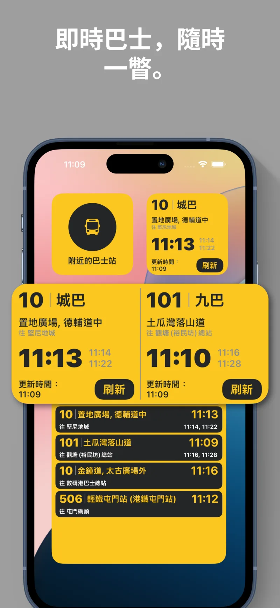
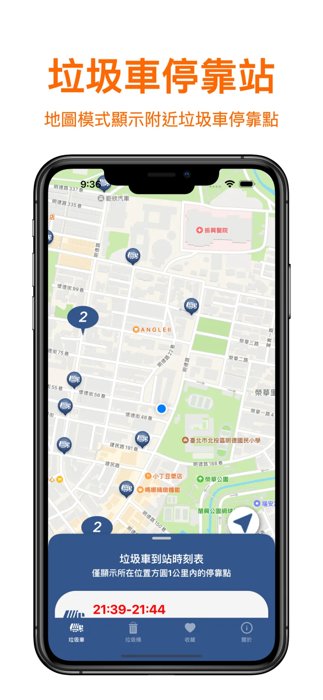
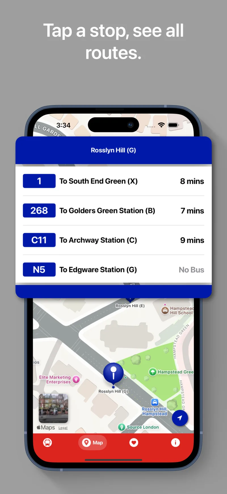
整合九巴、龍運、城巴、嶼巴、綠色專線小巴及港鐵巴士。查即時到站、附近站點與完整路線，也能規劃直達或一次轉乘行程。
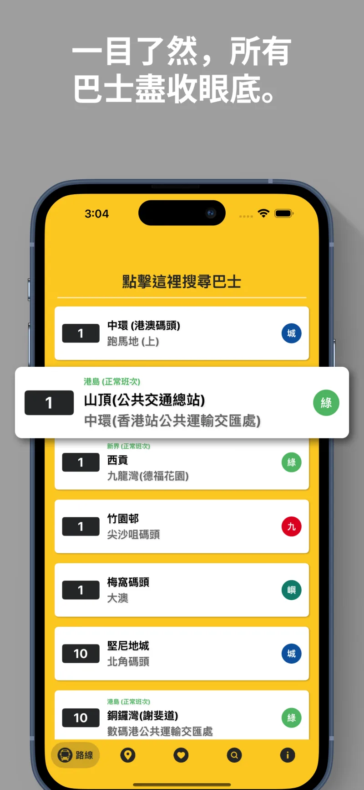
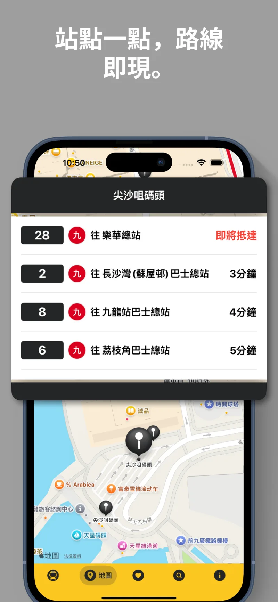
把各地垃圾車停靠時間與行人垃圾桶放進同一張地圖。可依地區、路名、時間與類型搜尋，收藏常用位置並設定提醒。
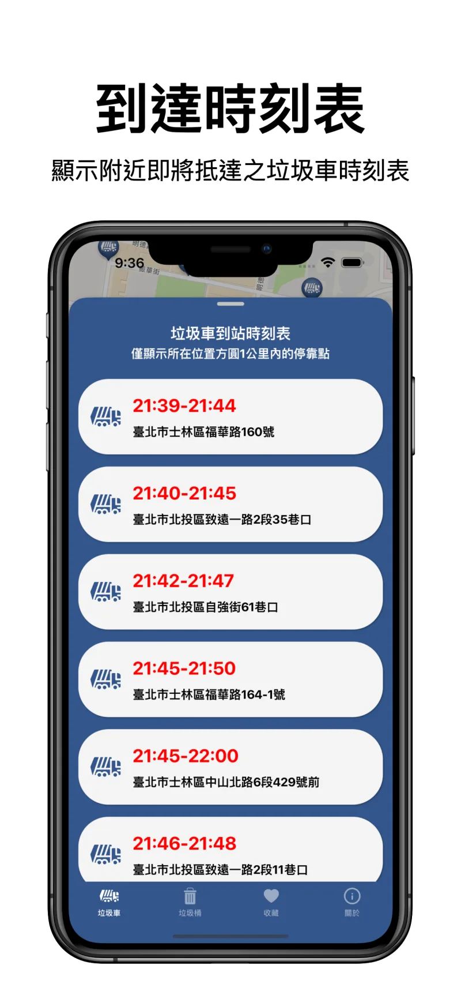
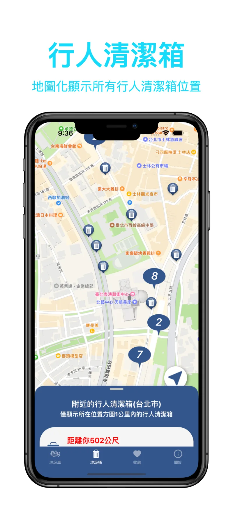
查看即時到站、附近站牌、路線全圖與服務資訊。收藏常用站點、整理群組，或直接從主畫面小工具查看下一班車。
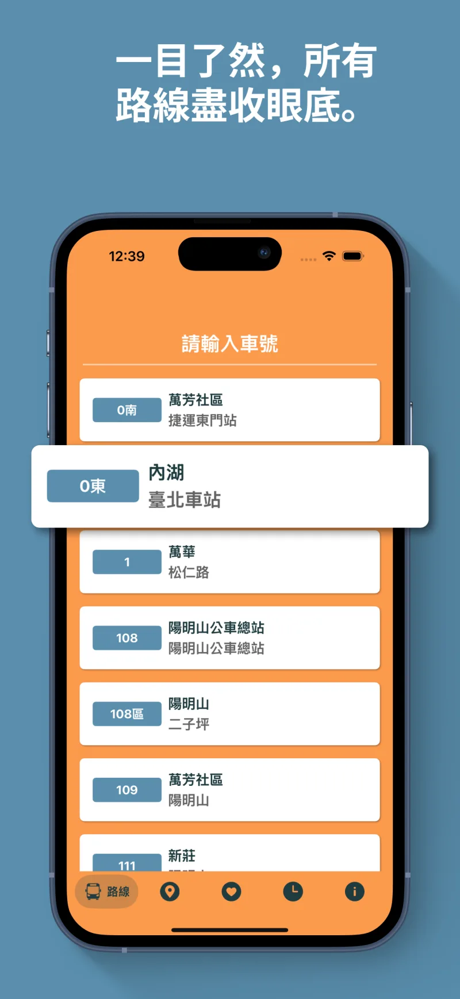
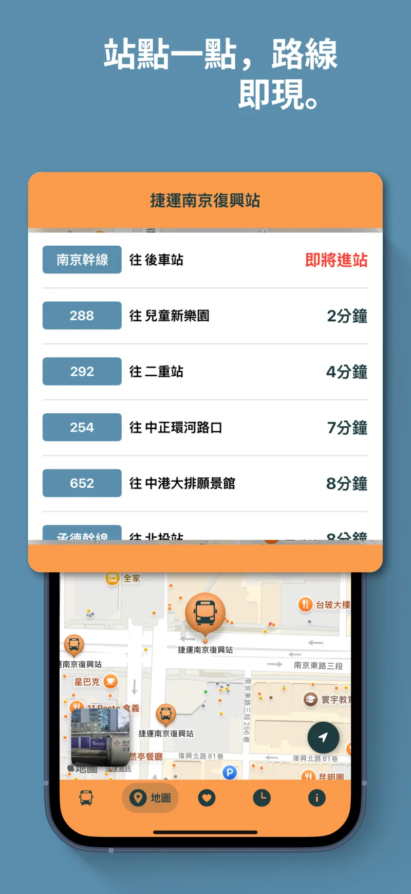
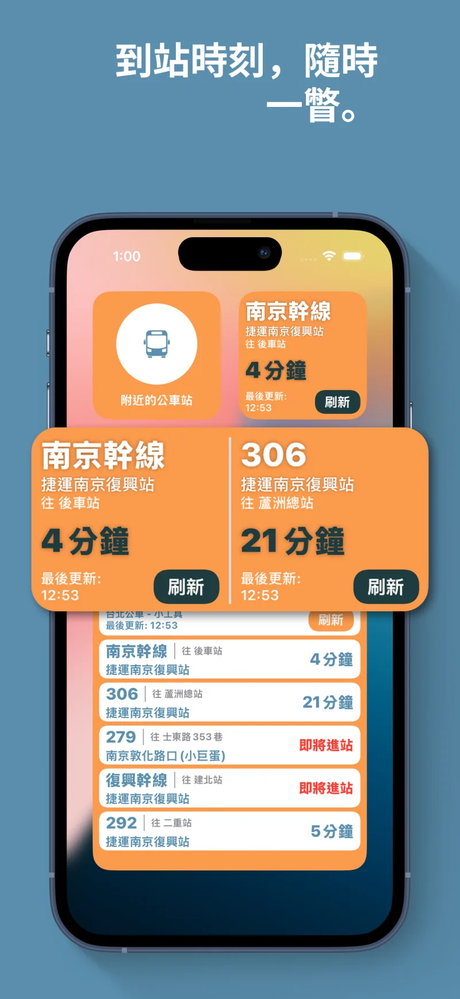
整合 SBST、GAS、SMRT 與 TTS，即時查看到站時間、附近站點和完整路線。收藏可分組，也能放到主畫面小工具。
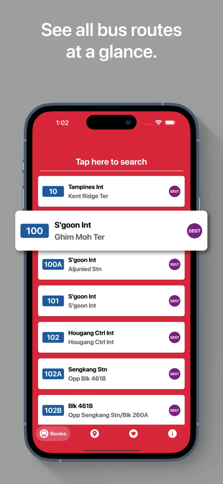
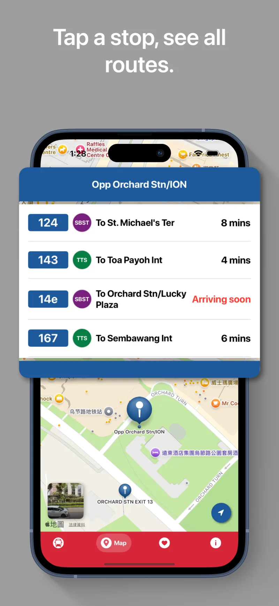
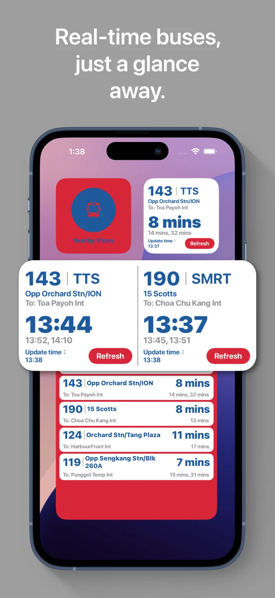
使用 TfL 官方開放資料查看即時到站、附近站牌與完整路線。常用站點可分組收藏，並透過主畫面小工具快速查看。
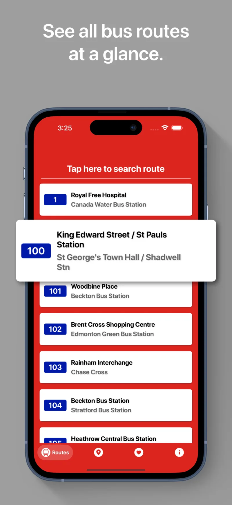
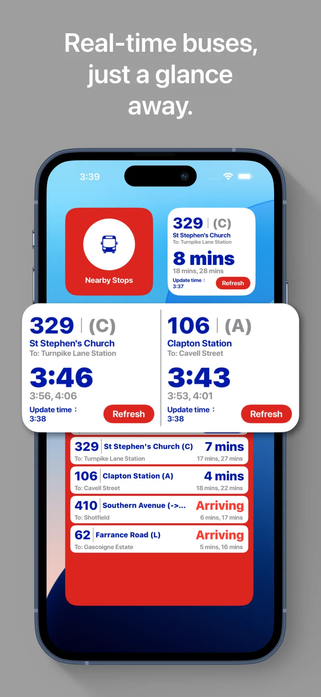
Barneysbro 是 Barney Chen 的獨立 App studio。每一個產品都從真實、反覆發生的城市問題出發，把官方資料轉譯成幾秒內能理解的畫面。
人在站牌前、回家路上、準備倒垃圾時，需要的是答案，不是資料庫。
以各地政府與交通營運單位的開放資料為基礎，持續整理與更新。
不同城市有不同的交通語言與生活節奏，介面也不該只是換一個城市名稱。
有問題、建議，或發現資料需要更新？